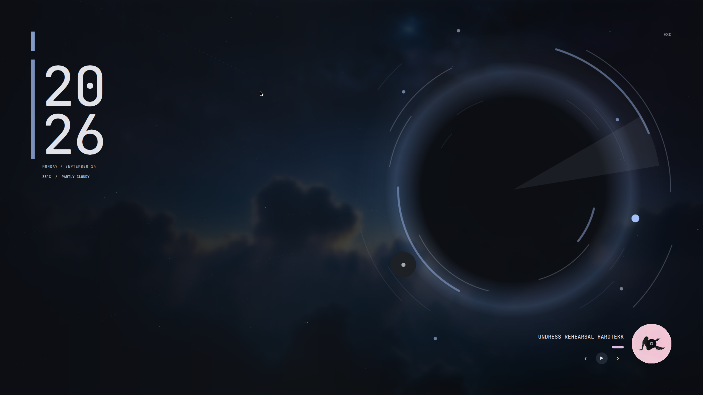

← THE INSTRUMENT DECK05 / 05
Umbra
A quieter way to step away.
A customizable lock surface with a separate preview and an isolated Wayland session-lock path.

LOCK-SURFACE PREVIEW · NOT A LOCK TESTPreviewInspect the surface without locking your session.
LockThe separate lock process uses Wayland session lock and PAM.
CheckUse lock status and host testing to verify your actual setup.
INSIDE UMBRAA place for
Explore the source ↗A place for
the details.
Preview separately
The preview command shows the lock surface without acquiring a session lock or authenticating.
An isolated lock process
The lock command runs a separate Quickshell instance for session locking and PAM authentication.
Your host matters
Authentication, output coverage, idle inhibition, and suspend readiness require testing on your Wayland session.
Optional adapters
Greeter adapters are available for supported display managers; setup and compatibility are documented separately.
PUT IT TO WORK
Preview before you rely on it.
Preview does not lock the session. When you are ready to test deliberately, blackhole lock starts the real lock flow. Verify authentication and every display before relying on automatic locking.
Get Tonantzintla ↗Read the lock guidance ↗blackhole preview-lock blackhole lock-status